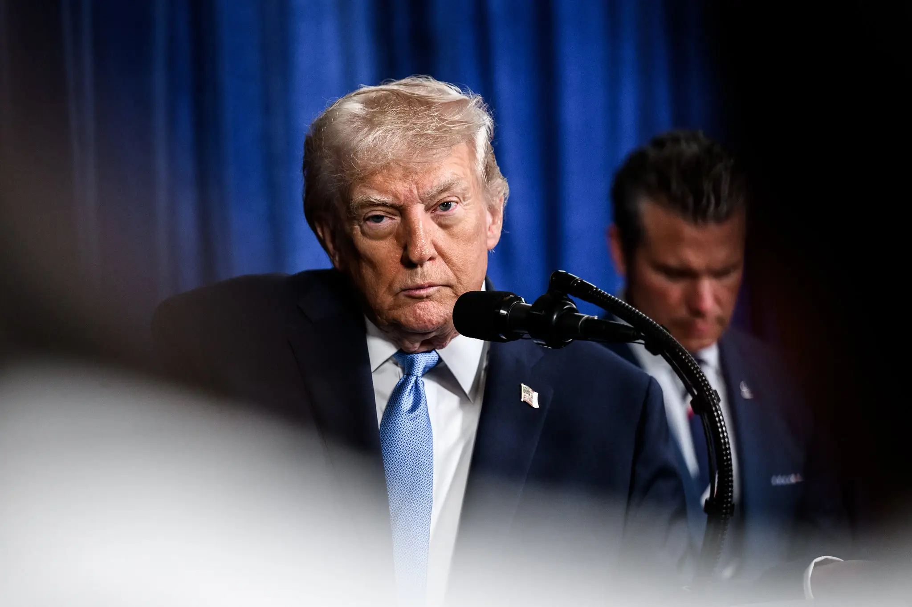

A atenção da geopolítica continua quase toda virada para o Médio Oriente. O cessar-fogo com o Irão arrasta-se, o estreito de Ormuz abre e fecha, e ninguém sabe ao certo até onde vai a escalada. É natural que assim seja. Mas há uma consequência paralela desta guerra que não é menos importante do que o seu desfecho militar, e que provavelmente terá efeitos mais duradouros para a Europa: a relação entre os Estados Unidos e a União Europeia entrou em rutura aberta.
A Europa não está envolvida diretamente no conflito. Não foi atingida fisicamente. Mas politicamente e estrategicamente, está a pagar uma fatura pesada. O que se passou nas últimas semanas confirmou uma tendência que se vinha a desenhar há anos. Talvez estejamos perto do momento em que os Estados Unidos abandonam mesmo a OTAN. E vale a pena perceber em que ponto está a discussão, que opções tem a Europa, e o que isto significa para quem gere ou constrói empresas neste continente.
O sinal que a Europa enviou
Quando a guerra com o Irão escalou, os principais países europeus recusaram-se a ajudar Washington. Não foi apenas Espanha, que já vinha a manter uma postura abertamente crítica e a recusar cumprir as metas de despesa em defesa exigidas por Trump. Foram também o Reino Unido, a França e a Itália a impor restrições ao uso das suas bases e pistas de aterragem para ataques contra o Irão. As regras mudaram várias vezes ao longo de poucos dias. Primeiro proibido, depois autorizado para reabastecimento, depois autorizado para ataque, depois novamente proibido. Para um continente cuja segurança depende inteiramente do guarda-chuva americano, este é um sinal de uma dureza inédita.
O caso mais embaraçoso foi o de França. O Governo francês recusou apoio militar aos Estados Unidos e, em paralelo, pagou dois milhões de dólares ao Irão para garantir o trânsito dos seus navios no estreito de Ormuz. O contraste é difícil de defender diante de um aliado.
Mais revelador ainda foi o caso italiano. Giorgia Meloni é, em teoria, a líder europeia ideologicamente mais próxima de Trump. Esteve na sua tomada de posse, é elogiada publicamente pela Casa Branca, partilha a mesma matriz política. E, ainda assim, recusou o uso das bases italianas. A explicação não está na ideologia, está na sobrevivência política. A opinião pública europeia, e em particular a italiana, virou-se claramente contra Trump. Para se manter no poder, Meloni teve de se afastar dele. O mesmo padrão repete-se em partidos de direita radical como o AfD na Alemanha. Trump deixou de ser ativo eleitoral em qualquer setor do eleitorado europeu.
Há, claro, motivos para a frieza europeia. A retórica de Trump sobre a Gronelândia foi agressiva. As negociações que Washington tem conduzido sobre o cessar-fogo na Ucrânia favorecem visivelmente a Rússia. E houve falta de comunicação prévia antes do ataque ao Irão. Tudo somado, faz sentido que a Europa esteja desconfortável. O problema é que escolheu confrontar quando não tem alternativa pronta para tomar o lugar do que está a recusar.
Três caminhos, nenhum simples
Em teoria, a Europa tem três opções para resolver a sua equação de defesa.
- Manter os Estados Unidos: reconhecer que a OTAN só funciona com Washington a comandá-la, e ajustar o comportamento europeu em conformidade. Isto exigiria parar de provocar e começar a entregar.
- Construir uma defesa europeia integrada: criar uma estrutura supranacional, com indústria, comando e financiamento comuns. Uma espécie de Pentágono europeu.
- Reforçar cada exército nacional: aumentar despesa em defesa em cada país, manter a soberania militar individual, e coordenar a ação em conjunto perante uma ameaça russa.
O primeiro caminho exige pragmatismo, e a Europa parece estar a fazer o oposto. Em todo o pacote de medidas adotadas durante a guerra com o Irão, o sinal foi exatamente este: que tanto faz se Washington fica ou parte. Esta postura tem custos. Trump já decidiu que custos haverá.
O terceiro caminho parece o mais natural, e é em parte aquele que está a ser seguido. A maioria dos países europeus já cumpre o limiar dos 2% do PIB em despesa de defesa. Cerca de 24 dos 32 membros da OTAN. A promessa atual é chegar a 3,5% até 2035. Trump fala em 5%. Mas o problema europeu não é apenas quanto se gasta. É como se gasta. E aqui entra um obstáculo que muito do debate público ignora.
O problema é estrutural, não de orçamento
A OTAN funciona porque os Estados Unidos preenchem todas as lacunas. Comando supremo, inteligência, capacidade espacial, infraestrutura tecnológica, fornecimento massivo de munição e equipamento, soldados em quantidade. Os exércitos europeus enchem nichos. Cada país tem uma indústria de defesa nacional, com armamentos próprios, calibres próprios, cadeias logísticas separadas. Multiplique-se isto por 27 países da União Europeia, e tem-se uma estrutura desenhada para não funcionar em conjunto.
Aumentar despesa neste modelo não resolve o problema. Pode até agravá-lo. Encomendar mais tanques alemães, mais aviões franceses e mais navios italianos sem coordenação produz redundância e ineficiência. O dinheiro vai ser gasto, e a capacidade militar continuará fragmentada.
Há também um problema de demografia e cultura. A Ucrânia está a resistir há anos com uma população relativamente jovem, com espírito guerreiro, com determinação existencial. A Alemanha, mesmo com história militar pesada, entrou nas últimas décadas num período cultural pacifista, antinuclear, com restrições constitucionais e orçamentais. Desligou as suas centrais nucleares civis depois do acidente japonês. Tem o partido verde mais forte do mundo. Transformar isto numa potência militar capaz de combater leva tempo, e leva muito mais do que dinheiro. O mesmo se passa noutros países europeus, em variações próprias. Comparar uma Europa fragmentada e desarmada com a Ucrânia em guerra não é realista. É mais provável que vários países europeus simplesmente cedam diante de uma ameaça russa, em vez de combater.
O Pentágono europeu, e por que pode não acontecer
A solução teoricamente mais coerente é a construção de uma defesa europeia integrada. Uma estrutura em Bruxelas que emita dívida comum, financie despesa militar, adquira equipamentos uniformes para todos os países, e construa uma força militar onde os soldados são enviados pelos Estados-membros. Algo equivalente, na defesa, ao que o euro fez na economia: uma cedência parcial de soberania para ganhar escala.
O argumento contra esta opção costuma ser a soberania. Mas é um argumento que não resiste à análise. Nenhum país europeu tem hoje verdadeira soberania militar. Os exércitos nacionais são fachada operacional sobre uma defesa terceirizada aos Estados Unidos desde o fim da Segunda Guerra Mundial. Recusar criar uma defesa europeia comum em nome de uma soberania militar que já não existe é uma fantasia útil para os establecimentos militares nacionais, não uma posição estratégica defensável.
A vontade política existe, em parte. As sondagens recentes mostram que a maioria dos europeus não confia na capacidade do seu próprio exército para defender o país perante as ameaças do século XXI. E confia significativamente mais nas instituições europeias. Há uma janela de legitimidade democrática que poderia ser aproveitada.
Os obstáculos reais estão noutro sítio.
Quem paga
Uma defesa europeia integrada implica transferência fiscal entre países. O dinheiro para armar a Itália sairia dos contribuintes alemães e holandeses. Se a crise da dívida soberana mostrou alguma coisa, foi que o Norte da Europa não gosta de financiar o Sul. Estender essa lógica ao armamento adiciona explosivos a um terreno que já é instável.
O contrato social alemão
A economia alemã está fundamentada num modelo industrial exportador. Uma defesa europeia integrada implicaria distribuir cadeias industriais pelos vários países: tanques na Alemanha, mísseis em França, munições em Itália. A Alemanha perderia uma parte da sua capacidade industrial num momento em que já está a ser pressionada pela concorrência chinesa e pela perda da energia barata russa. Vender esta cedência à sociedade alemã, num só pacote com a transferência fiscal e a militarização, parece insustentável.
Não há acordo sobre qual é a ameaça
Sondagens junto de governantes e especialistas europeus classificam os países em cinco categorias de perceção de ameaça russa.
| Categoria | Posição | Países típicos |
|---|---|---|
| 1 | A Rússia não é uma ameaça relevante | Portugal, Espanha, Itália |
| 2 | É uma ameaça, mas não a principal | França |
| 3 | É uma ameaça igual a outras | Alemanha, Suíça, Holanda |
| 4 | É a principal ameaça, mas não a única | Noruega, Suécia |
| 5 | É a única ameaça que importa | Finlândia, Polónia, Bálticos |
A primeira categoria é a que tem o maior número de países da União Europeia. Quem está na categoria cinco partilha pouco ou nada com quem está na categoria um. Construir uma indústria de defesa comum exige acordo sobre que armas fazem sentido. E armas para conter a Rússia nuclear são diferentes de armas para conter ameaças terroristas no Sahel. Sem acordo sobre a ameaça, não há acordo sobre o equipamento.
O risco de implosão política
Avançar com uma defesa europeia integrada exigiria um novo tratado. Os tratados europeus do passado foram sempre processos politicamente instáveis. Houve referendos perdidos, ratificações que passaram por uma margem mínima, divisões internas profundas. Lançar agora um tratado sobre uma matéria tão sensível como a defesa, com uma Alemanha rearmada no centro, pode acabar por produzir o oposto do que pretende. Em vez de unir a Europa, fragmenta-a.
O dilema nuclear
Mesmo que tudo isto fosse resolvido, ficaria por resolver a questão mais difícil: o guarda-chuva nuclear. A defesa da Europa contra a Rússia depende, em última instância, de capacidade de dissuasão atómica. E aqui os números são esmagadores.
Apenas dois países europeus possuem armas nucleares: França e Reino Unido. A França tem capacidade de segundo ataque por via de submarinos nucleares, o que tecnicamente é o que se exige a uma força de dissuasão. O Reino Unido tem números semelhantes. Em conjunto, somam pouco mais de 500 ogivas. A Rússia tem perto de 5.000. Esta diferença é, ela própria, um incentivo para um primeiro ataque russo desenhado para destruir o arsenal franco-britânico.
A França ofereceu publicamente o seu guarda-chuva nuclear ao resto da Europa. Países como a Alemanha responderam com cautela: aceitam, desde que os Estados Unidos não se retirem completamente. A razão é simples. A dissuasão nuclear depende de duas coisas: capacidade técnica para retaliar e disponibilidade percebida para o fazer. A Polónia poderia, com algum esforço, acreditar na capacidade técnica francesa. Acreditar que Paris lançaria uma ogiva nuclear porque a Rússia atingiu uma cidade polaca com uma arma tática é mais difícil. E se não há credibilidade percebida, não há dissuasão.
A alternativa seria criar uma força nuclear europeia comum, financiada por todos, com França e Reino Unido a contribuir com parte do arsenal inicial. Mas a decisão de lançar teria de ficar com uma autoridade supranacional sem legitimidade democrática direta. Imaginar um conselho europeu a decidir sobre o uso de armas atómicas, em tempo real, perante uma agressão a um único Estado-membro, é um exercício de ficção institucional. Moscovo não acreditaria.
Resta a opção mais radical: cada país europeu armar-se nuclearmente. A Polónia já manifestou interesse, e a Alemanha teria capacidade técnica. Mas para Berlim avançar é preciso desfazer décadas de cultura pacifista, restrições legais e constitucionais, e uma desativação completa do parque nuclear civil. Quanto tempo isso demora? Anos, no mínimo. E qual a reação política à ideia de uma Alemanha nuclear, dentro e fora da Europa? Provavelmente desencadearia uma corrida nuclear global. Pode ser, ainda assim, a única saída no longo prazo.
Uma Europa enfraquecida, não uma Europa autónoma
O secretário-geral da OTAN, Mark Rutte, tem repetido publicamente que a Europa não existe sem os Estados Unidos do ponto de vista da segurança. É uma posição realista do ponto de vista militar, mas tem um custo político. Sinaliza ao movimento político à volta de Trump que a Europa é o que ele diz que é: uma aliada fraca, dependente, que recebe sem entregar. A estratégia de apaziguamento não tem produzido resultados. O desrespeito americano cresce em paralelo com a submissão europeia.
Israel, em comparação, tem feito o oposto. Demonstra ativamente que é um aliado capaz de entregar, de arriscar soldados, de partilhar responsabilidade. É essa demonstração de utilidade estratégica que sustenta a relação. A Europa não está a fazer nada disso.
O resultado provável das próximas etapas é uma Europa simultaneamente menos protegida pelos Estados Unidos e incapaz de se proteger sozinha. Um continente confuso, fragmentado, a multiplicar despesa em defesa sem ganho real de capacidade. A Rússia vai ler isto como oportunidade. Não é impossível assistir a um movimento russo ainda nesta década, em função de como esta história se desenrolar.
Como aplicar este conhecimento
Para uma empresa portuguesa, o instinto é tratar este tipo de discussão como ruído distante. A defesa europeia, a OTAN, o nuclear, são matérias de chancelarias. Não são. As decisões que estão a ser tomadas neste período vão moldar a política industrial europeia, a alocação de fundos comunitários, e a estrutura de custos de uma série de setores nos próximos dez a quinze anos.
Há três pontos práticos a reter para quem gere ou constrói uma empresa em Portugal:
- Defesa vai canalizar capital europeu. Se a Europa avançar com despesa nos 3,5% do PIB, ou eventualmente nos 5%, é uma das maiores reafectações de recursos da última geração. Setores adjacentes (tecnologia dual-use, cibersegurança, logística, materiais avançados) vão ser puxados. Empresas portuguesas com posicionamento técnico nestas áreas devem mapear desde já o pipeline de programas europeus de defesa.
- A política industrial europeia vai mudar. A retirada parcial dos Estados Unidos força a União Europeia a reforçar autonomia estratégica também em energia, semicondutores, matérias-primas críticas. O Portugal 2030, o COMPETE 2030, e a próxima geração de fundos vão refletir esta orientação. As empresas que se posicionarem cedo nestes vetores vão ter mais acesso a financiamento.
- Risco geopolítico passa a ser operacional. Empresas com cadeias de fornecimento que dependem de estabilidade transatlântica precisam de reavaliar exposição. Um cenário de rutura formal entre Washington e Bruxelas teria efeitos imediatos em comércio, dados, padrões técnicos e proteção militar. Faz sentido começar a fazer esse exercício de stress test enquanto ainda é exercício teórico.
A Open Capital acompanha, em vários dos seus mandatos, empresas cuja estratégia depende deste tipo de leitura. Não para fazer geopolítica, mas para ler corretamente o ciclo de incentivos, de financiamento e de procura que vai emergir nos próximos anos. Ignorar este pano de fundo é deixar dinheiro em cima da mesa.
Comentários, correções ou contrapontos são bem-vindos: geral@opencapital.pt